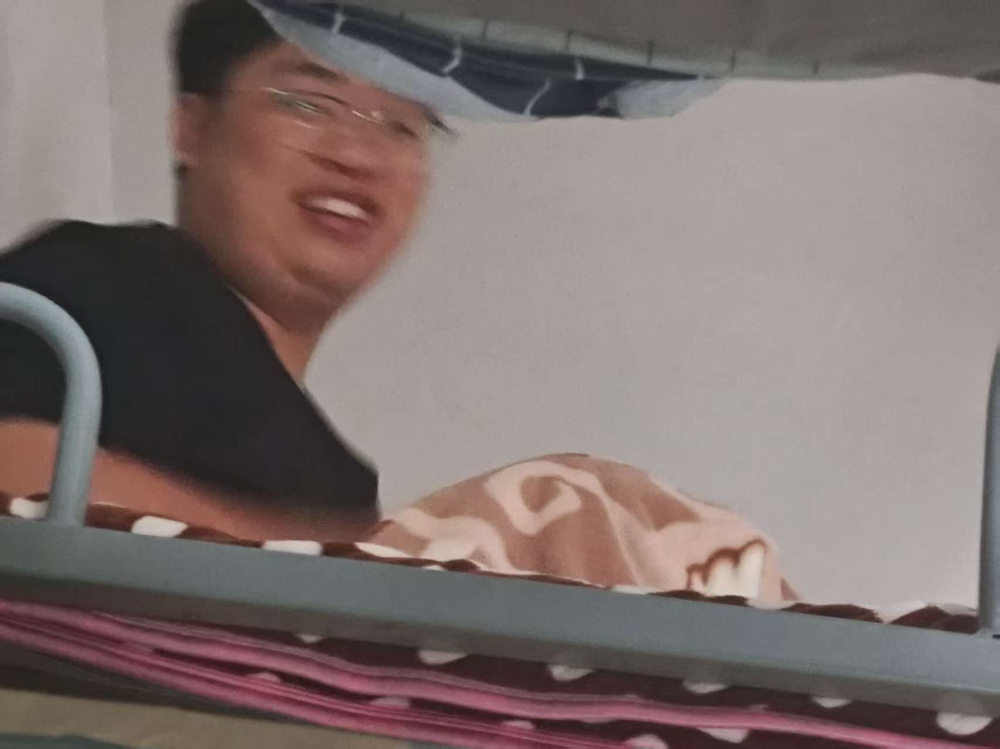
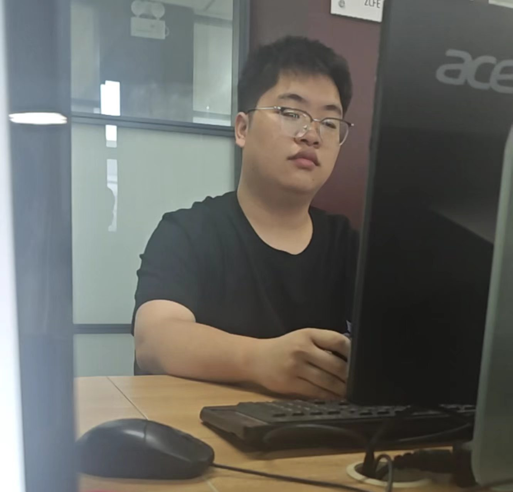
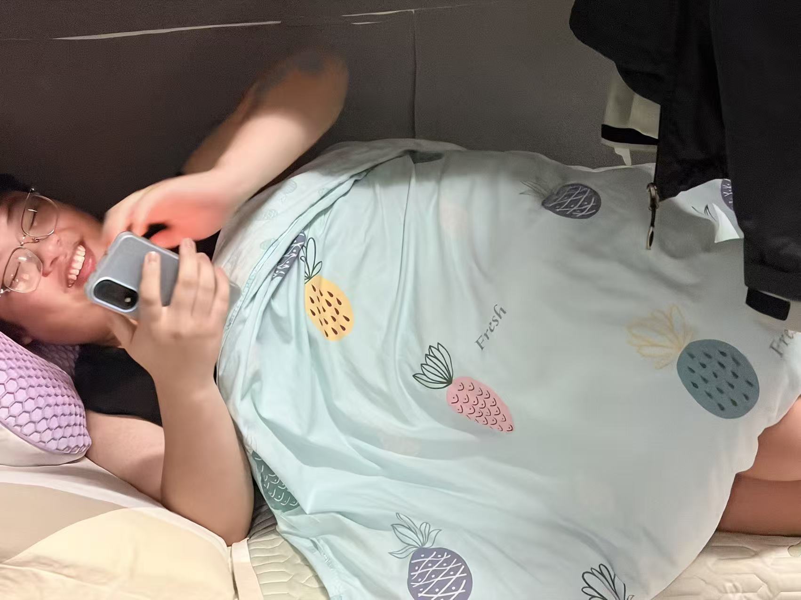
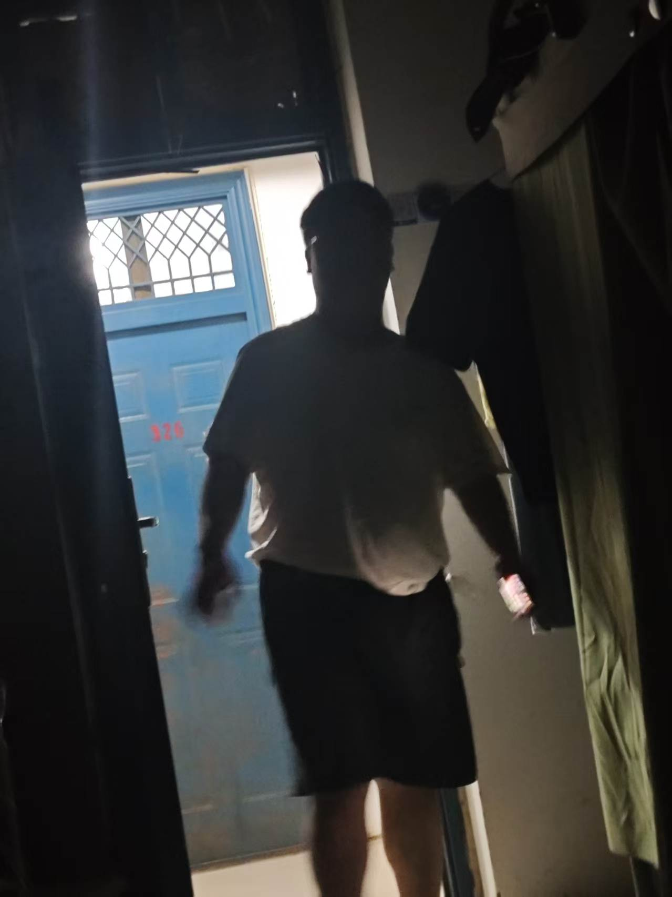
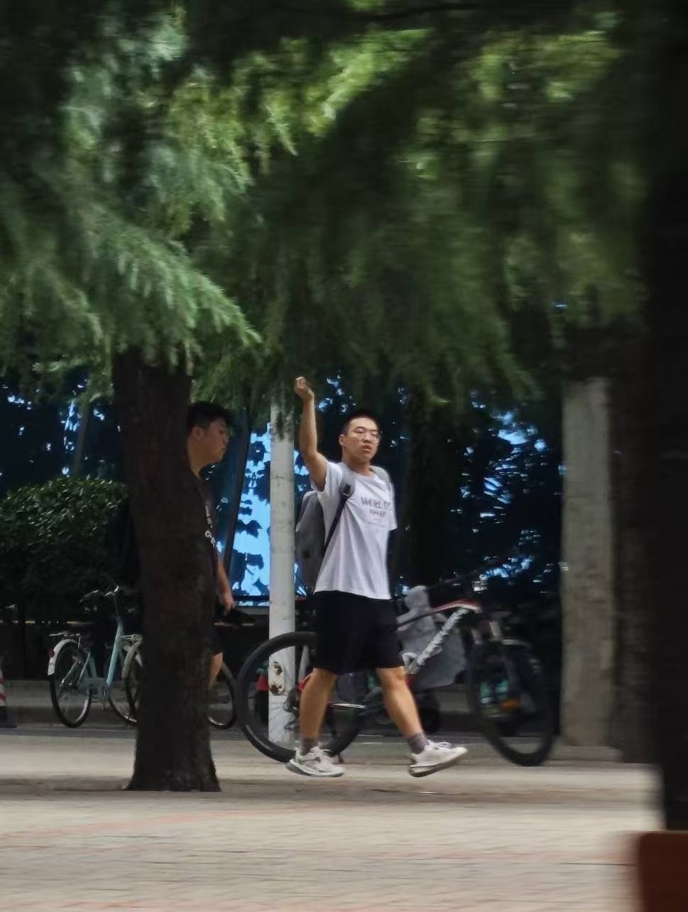
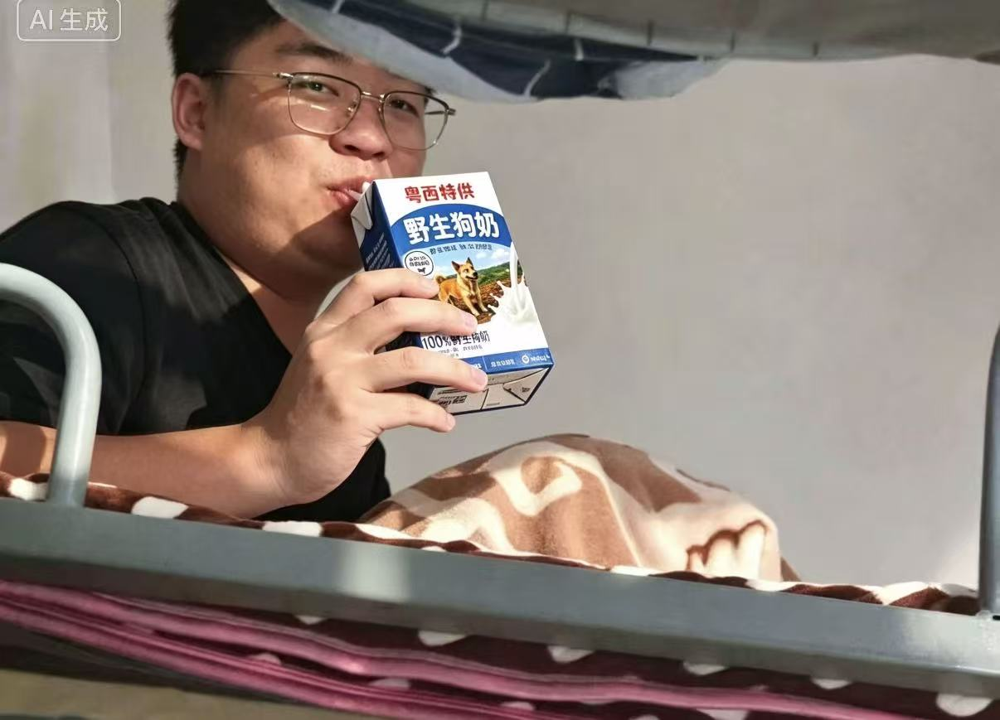

ZCFE · 校园生活
一个广西小伙的河南奇遇记




故事的开始，是二十个小时的硬座。
九月的柳州还浸在盛夏的闷热气里，车站人声鼎沸，行李箱滚轮碾过地面哗哗作响。广西小伙背着鼓鼓的双肩包，手里攥着塑料袋，里面装着母亲提前塞好的泡面、鸡蛋和矿泉水，踏上开往郑州的绿皮火车。
没有卧铺，只有一张硬座票。二十个小时，要硬生生熬完。
车厢里挤得满满当当，过道站满了人，行李堆在脚边，空气混杂着泡面味、汗味，还有车窗透进来发烫的热风。座位狭窄，后背抵着硬邦邦的靠背，坐久了腰又酸又僵。想躺不能躺，想睡睡不踏实，只能歪着脑袋，靠在车窗上打盹，脑袋随着列车颠簸来回晃，睡不了多久就会被惊醒。腿不能舒展，长时间蜷缩着，双脚慢慢发胀发麻。想去洗手间，过道堵得水泄不通，要侧身挤很久才能挪过去。
窗外的风景一点点向后退，从连绵的桂地山林，慢慢变成平原。白天耗着时间，漫漫长夜才最难熬。车厢灯光调得昏暗，周遭此起彼伏的鼾声、说话声交织在一起。夜里气温降下来，身上薄外套挡不住穿堂的冷风，裹紧衣服也依旧发冷。不敢深睡，怕随身的东西弄丢，只能半睁着眼，数着一站又一站。泡面吃了两顿，水不敢多喝，上一趟厕所太过折腾。
二十个小时，一分一秒都过得很慢。
火车一路向北，跨过千山万水。当广播播报即将抵达郑州站的时候，浑身已经坐得麻木。肩膀酸痛，眼皮沉重，脸上带着熬夜熬出来的倦意。拎起早已压得沉重的背包，拖着发胀的双腿，随着人流缓慢走出车厢。
踏出站台的那一刻，南方潮湿温热的气息彻底留在身后。扑面而来的，是北方干燥陌生的风。千里之外，这是他求学故事真正的开端。身后是千里之外的家乡，眼前，是全然陌生的城市。
二十个小时硬座磨掉大半精气神，拖着发胀浮肿的双腿踏出郑州火车站，燥热干硬的北风迎面扑过来。从湿润多雾的柳州骤然来到北方，空气干得像砂纸，吸进鼻腔喉咙立刻发紧。手里攥着大包小包，挤上颠簸拥挤的校园大巴，才算真正踏入大学校园。属于他的大学第一课，没有想象里的新鲜美好，全是实打实的难熬。
最先扛不住的是饮食。在家乡，日日是米粉、热粥、清淡的小炒，饭菜鲜润，口味偏淡。食堂里满眼都是面食，馒头、烩面、重油重盐的菜，汤水少，菜色厚重。他吃不惯面食，硬着头皮往下咽，胃反复受刺激。米饭也和南方不一样，颗粒偏干偏硬，嚼着粗糙。一顿饭吃不了多少，常常吃完胃里胀得难受，隐隐作痛。想找一口熟悉的米粉很难，物价对比家乡，每一笔开销都要反复掂量。偶尔吃到不合胃口的饭菜，扒两口就吃不下去，饿肚子成了常态。水土不服接踵而至，嘴唇干裂起皮，怎么喝水都缓解不了，脸上冒起连片的痘痘，夜里睡觉嗓子干得发疼，频繁醒来。
还没来得及慢慢适应生活，军训就接踵而至，成了压过来的又一重磨难。
九月的郑州太阳毒辣，没有南方山林的树荫遮挡，操场地面被晒得滚烫。每天很早就要集合，站军姿一站就是很久，烈日直直晒在皮肤上，后背的军训服反复被汗水浸透，湿了又被体温烤干，结出一层白白的盐渍。衣服布料粗糙磨皮肤，肩膀、后颈被衣领蹭得发红刺痛。
原地踏步、齐步走一遍遍反复操练，脚底踩在发烫坚硬的塑胶跑道上，新的军训鞋底硬得硌脚，不出几天脚后跟磨出水泡，水泡破掉之后，每走一步都是钻心的疼。白天晒得头晕眼花，热浪扑面而来，好几次眼前阵阵发黑，只能咬牙硬撑不敢轻易打报告。身边的同学有的从小习惯北方气候，尚且叫苦连天，来自南方的他更加难熬。
傍晚解散回到宿舍，浑身骨头像散架一般。宿舍空气闷热，浑身汗臭，累得连抬手洗澡都觉得费力。躺在床上，脚底的伤口隐隐作痛，胃还在隐隐闹腾。想家的情绪翻涌上来。千里之外的柳州，有熟悉的米粉，有温度适宜的风，有家里安稳的床。可现在，孤身一人，身体处处都是不适感。
他只能默默把破掉的水泡简单处理，忍着胃部的不适，逼着自己入睡。这是离家千里之后，真实又狼狈的大学生活，没有光环，只有一个少年硬扛着陌生环境带来的重重磋磨。

好不容易熬完炼狱一般的军训，皮肤晒得黝黑脱皮，脚底的水泡还没完全长好，胃依旧时不时隐隐作痛。本以为军训结束，总算能喘一口气，迎来想象里和睦轻松的宿舍生活。可现实狠狠给了我当头一棒。
我在宿舍遇见了阿政。
初次见面印象就算不上好。他个人十分邋遢，桌面堆着吃剩的外卖盒，包装袋、饮料瓶东倒西歪胡乱堆放，衣服袜子随手扔在椅子、床沿，空气里总飘着一股淡淡的异味。我心里已经隐隐生出一丝不安，但刚入大学，大家都是室友，我只能不断告诉自己多包容。
真正的折磨，是从一个个深夜开始的。
每当夜色沉下来，其他人准备休息，阿政的夜生活才刚刚开幕。他戴着耳机，键盘敲得噼啪作响，急促尖锐的敲击声在安静的寝室里格外刺耳。一旦游戏局势不顺，输了对局，他就控制不住情绪，压低不住嗓门大声咒骂队友，脏话一句接一句地砸出来，打破深夜的宁静。情绪上头的时候，还会狠狠摔鼠标，“啪”的一声巨响，在寂静黑夜里惊心动魄。
我本来就因为水土不服睡眠很浅，肠胃不舒服也时常辗转难眠。好不容易有点困意，就被键盘声、叫骂声、摔东西的巨响猛地惊醒。睁着眼睛躺在被窝里，身心俱疲却根本无法入睡。白天军训透支的身体得不到半点休息，脑袋昏沉发胀，只能死死闭住眼睛，一遍遍劝自己忍耐。寝室是集体空间，我一个刚离家的外地学生，也不好撕破脸争吵，只能默默承受这份精神内耗。
而最让我毛骨悚然的一回，发生在半夜熟睡之时。
睡得迷迷糊糊间，我忽然感觉身上压上来沉甸甸的东西。猛地惊醒，心脏瞬间揪紧，黑暗之中，居然是梦游的阿政，不知什么时候爬下自己床铺，俯趴到了我的身上。我浑身僵硬，后背泛起一层冷汗，大气都不敢喘，手足无措，既不敢大力推搡惊醒他，又被这突如其来的状况吓得浑身发紧。过了许久，他才恍恍惚惚地挪开，跌跌撞撞回到自己床上躺下。
那一夜，我彻底失眠。
躺在床上，听着身旁室友此起彼伏的动静，回想起高考之后对大学的万般憧憬。我曾经以为，大学宿舍是志同道合的伙伴一起说笑，互相扶持，是温暖自在的小集体。可现实却是二十小时硬座的颠簸、水土不服的病痛、军训的皮肉煎熬，再加上眼下深夜无休止的噪音、压抑的宿舍氛围，还有这场猝不及防的惊魂一幕。
千里奔赴而来，没有遇见理想里的青春，只有一桩桩接踵而至的窘迫与无奈。身处异乡，无依无靠，很多委屈连跟家里都不愿细说，只能全部闷在心底。
老旧宿舍楼，墙皮微微起卷，空调嗡嗡作响，阳台堆着球鞋和洗衣盆，这里是阿鸿和阿喆故事开始的地方。
阿鸿是最先住进230的。性格安静内敛，作息规整，东西永远摆得整整齐齐，喜欢安安静静坐在电脑前看呆呆的看着 danking 直播。阿喆是后来进来的，推门进来的时候背着大大的运动包，一身汗味，眉眼张扬随性，大大咧咧把行李往空床位一扔，成了阿鸿的室友。
两人床位挨着，中间只隔一条窄过道。

最开始只是普通室友。阿喆打球晚归，阿鸿会悄悄给他留一盏台灯；阿鸿体质微胖爱出虚汗，阿喆打完球会顺手带一杯蜜雪冰城回来。狭小的230寝室，只有他们几个人常常留守，另外几个室友爱打游戏。独处变少，暧昧悄悄滋生。
某个深夜，寝室另外几人又不在。熄灯之后，只有窗外路灯渗进来一点微光。阿喆翻来覆去睡不着，侧过头看向隔壁床的阿鸿，低声搭话，聊着聊着，伸手跨过过道，轻轻碰了碰阿鸿露在被子外面的手腕。
阿鸿浑身一颤，没有躲开。
就是在这间230寝室，在两张相邻的床铺之间，他们捅破那层窗户纸，偷偷在一起了。

热恋期全藏在230的方寸之间。趁着另外几个室友不在，他们在狭小的阳台喝了点老雪花；共用一副耳机靠在书桌边看CSGO2 和无畏契约大师赛；阿喆会把阿鸿圈在怀里，窝在一张床上打王者。他们约定好，对外只说是室友，这份感情只属于230这间小屋，属于他们两个人。阿鸿掏心掏肺，认定阿喆是他这辈子唯一的偏爱。
可狗血的裂痕，也是从230开始裂开的。
阿喆外向朋友多，校内认识一个男生。一开始只是偶尔聊天，慢慢经常晚归。从前会准时回寝室陪阿鸿，后来常常深夜才推门回230，身上带着陌生的香水味。阿鸿问起，阿喆只说是朋友聚会，叫他别胡思乱想。
导火索在一个周末。另外几个室友回家，230只有他们。阿鸿提前买好了阿喆爱吃的甜品，打算好好和他聊聊。阿喆以为阿鸿出门了，在寝室阳台打电话。
阿鸿从卫生间出来，一字一句听得清清楚楚。电话那头是那个校内的那个白小羽，阿喆靠着阳台栏杆，语气轻佻：“那个阿鸿？就是我寝室的，很乖，很好哄。在230天天等着我，太黏人了。我生日的时候还送小蛋糕给我吃，我不是没有吃，给你留着了吗，就是暂时先陪着吧，新鲜感，等腻了我就和他摊牌。别吃醋，我心里更偏向你。”
阿鸿手里的甜品盒子“哐当”砸在地上，塑料盒裂开，奶油淌到地板缝里。
阿喆猛地回头，看见站在寝室中央、脸色惨白的阿鸿，瞬间僵住。被撞破之后，他第一反应不是愧疚，反而恼羞成怒。哎呀妈呀，“你偷听我电话？”阿鸿声音发抖：“所以在230所有的温柔，都是装出来的？你抱着我说的那些话，全是哄我的？”
阿喆被戳穿，索性破罐子破摔，嘴硬伤人：“是，是我一时兴起。是你自己当真了，是你自己陷进来的。阿鸿你不能怪我，只能怪隔壁那个白小羽太会扭了。”
争吵在狭小的寝室炸开。墙皮、书桌、两张并排的床，全都见证这场撕破脸的难堪。阿鸿当晚收拾东西，暂时搬去327宿舍，离开了盛满所有欢喜与心碎的230。
但狗血拉扯才刚刚开场。
等阿鸿真的消失，不再回230，不再主动发消息，不再等他晚归。阿喆才猛然发现，早就习惯了寝室里阿鸿安静的身影，习惯桌上温好的水，习惯深夜有人和他一块打王者。那些他以为只是“新鲜感”的东西，早已经刻进日常。
他开始疯了一样挽回。天天守在空荡荡的230，阿鸿不肯回来，他就跑到教学楼、食堂堵人，一遍遍道歉，卑微求和。他断了和白小羽的联系，把那人所有联系方式删掉，一遍一遍和阿鸿解释，说自己鬼迷心窍，口不择言，心里真正喜欢的一直是他。
更乱的是，校外那个男生不甘心，跑到阿硕面前散播流言，说阿鸿纠缠阿喆，把所有错推给阿鸿，故意挑拨。
阿鸿心里爱恨拧成一团。他明明还爱着，可230寝室里那句轻飘飘的“新鲜感”像根刺，拔不掉。阿喆越是偏执地纠缠，他越是害怕。阿喆见软的不行，开始变得极端，只要看到别人靠近阿鸿，就会上前打断，拼命宣示占有，用错的方式想要把人拉回230。
期末的一晚，另外两个室友出去聚餐，230寝室再次只剩阿喆一个人。阿鸿回来拿留在寝室的书籍，推门进来。
房间还是老样子，他们曾经并排看书的书桌，两张相邻的床铺，地板上那道曾经沾过奶油的痕迹还隐约可见。
阿喆快步上前，一把抱住他，声音沙哑颤抖：“阿鸿，回来好不好，回到230。我知道错了，那次电话是我胡说的气话，我不能没有你。”
阿鸿背脊僵硬，慢慢抬手，轻轻推开他。眼底是疲惫的红。“阿喆，我们所有的心动，谎言，争吵，全都锁在230这间寝室里了。就算回来，也回不到当初了。”
宿舍老旧空调依旧嗡嗡运转，晚风从窗户吹进来。故事始于230寝室两张相邻的床，最后只剩一地解不开的执念，相爱，背叛，悔恨，无休止地互相折磨。

自从在230寝室被阿喆亲手碾碎所有真心，那场轰轰烈烈又廉价至极的故事彻底落幕之后，阿鸿的世界彻底塌了一角。以前的他，是230公认的乖学生，作息规律、勤恳自律，书桌永远干干净净，课一节不落，作业次次满分，是老师眼里的小胖，是室友口中最靠谱的同桌。可爱上阿喆、被阿喆背叛之后，他彻底变了个人，活得一塌糊涂。
失恋的空落和心口的剧痛无处宣泄，阿鸿偶然刷到了全网爆火的野生狗奶热梗。全网都在玩梗：真心没用，爱情太苦，唯有野生狗奶，纯度最高、后劲最大，一口入魂，忘掉所有情爱内耗。没人当真，全是网友自嘲解压的玩笑，可深陷情绪泥潭的阿鸿，偏偏把这个梗当了真。
对他而言，阿喆的爱是假的、是新鲜感、是玩弄人心的骗局，可网传的野生狗奶不会骗人，不会敷衍、不会背叛、不会说着爱他又转头和别人暧昧拉扯。于是，阿鸿彻底染上了野生狗奶的瘾。
这东西成了他失恋后的唯一精神寄托，比当初沉溺阿喆的温柔还要上头。别人失恋喝酒抽烟、熬夜emo，他独独沉迷野生狗奶，日日上瘾、夜夜贪杯，彻底走火入魔。
曾经干净整洁的230寝室床位，彻底变得脏乱不堪。阿鸿再也不会早起整理床铺，再也不会认真刷题背书。从前为了和阿喆并肩前行努力学习的劲头，被一口又一口的野生狗奶彻底磨平。他开始疯狂逃课。
清晨的早八专业课，室友全都起床赶课，唯有阿鸿窝在230的床上，昏昏沉沉沉溺在自己的世界里，靠着野生狗奶麻痹神经。白天的课堂、知识点、考勤分数，在他眼里全都索然无味，比不上一口上头的慰藉。
他彻底摆烂，日夜颠倒。别人在教室听课、在图书馆刷题、在操场散步，他缩在230寝室，靠着野生狗奶熬过每一个难熬的日夜。昔日温顺自律的少年，被情伤和荒诞的瘾头彻底拖垮，眼神空洞、状态颓废，浑身透着死气。
阿喆不是没见过他这副模样。彼时的阿喆还在偏执纠缠，日日守着230寝室等他回头，看着昔日满眼都是自己的少年，如今眼里再也没有半分爱意，只剩下麻木和空洞，整日靠着离谱的嗜好颓废度日。阿喆又急又悔，堵在寝室门口红着眼劝他：“阿鸿，别这样，你变回以前好不好？我错了，我真的改了。”
可无论他怎么道歉、怎么求和、怎么卑微挽留，阿鸿都无动于衷。被爱情伤透的人，早已不信他的任何忏悔。比起反复拉扯、充满谎言的阿喆，虚无的野生狗奶，反而让他更有安全感。
疯狂逃课、长期摆烂、彻底荒废学业的代价，在期末考如期而至。第一学期的期末成绩公示出来，阿鸿直接全线挂科。曾经稳居班级前列的优等生，一夜之间沦为全系挂科大户，多门专业课红灯刺眼，辅导员亲自找他谈话，警告再摆烂下去就要面临留级。
看着成绩单上密密麻麻的挂科标记，看着镜子里颓废麻木、面目憔悴的自己，再想起这段时间荒唐至极的生活——为了一个不值得的阿喆，荒废学业、透支自己、沉迷无脑梗式的自我麻痹，阿鸿终于幡然醒悟。他忽然觉得无比可笑。
为了一个玩弄自己真心的人，毁掉自己的前途，沉溺虚无的野生狗奶自我内耗，简直是蠢到极致。爱情没了可以再遇，青春和前途毁了，就再也回不来了。那一刻，阿鸿下定决心：戒断野生狗奶，彻底翻篇过去，戒掉情爱执念，戒掉荒唐颓废。
戒断的过程无比煎熬。无数个深夜，瘾头发作、情绪反扑，他一边想起阿喆带来的伤害，一边习惯性想要沉溺慰藉。但每次难熬的时候，他就盯着刺眼的挂科成绩单，死死扛住所有冲动。他硬生生扛过了所有戒断反应，彻底戒掉了陪伴自己整个颓废学期的野生狗奶，斩断了所有自我内耗。
就在他彻底戒断成功、身心轻松的那一刻，寝室老旧的灯泡骤然闪烁，眼前光影剧烈扭曲，天旋地转的眩晕感席卷全身。再次睁眼，晚风微凉，宿舍空调嗡嗡作响，还是熟悉的230寝室。
桌上的日历赫然显示——大一开学初，一切悲剧尚未发生，他还没对阿喆动心，还没遭遇背叛，还没颓废逃课，更没染上野生狗奶的荒唐瘾头。他重生了。
这一次，230寝室的门再次被推开，背着运动包、张扬桀骜的阿喆搬着行李走进来，眉眼依旧帅气，依旧带着漫不经心的野性，一如初见那般。但这一次，阿鸿眼底没有半分心动。他收起了所有温柔和卑微，摆正桌上的书本，坐直身体，内心无比清醒。
前世，他为阿喆沦陷、为情所伤、为荒唐执念荒废青春、沉迷野生狗奶自我毁灭，落得满身伤痕、学业尽毁。今生重来，他戒掉奶瘾，戒掉爱意，戒掉所有不值的执念。
230寝室依旧是230寝室，但阿鸿再也不是那个会为阿喆低头、为爱内耗的傻少年。青涩的心动也好，刻骨的背叛也罢，还有那段全网爆笑、自己却当真沉沦的野生狗奶黑历史，全都成为了前世作废的荒唐过往。这一世，他只拼前程，不碰烂爱，干干净净，向阳重生。